Guía de Crow - Habilidades, Talismán y Equipos | Hero Wars Alliance
- Por: Alexandre Domingos. .
Crow es el tipo de héroe de Control que incomoda a los equipos de magos incluso antes de que empiece la pelea. Todo su kit está construido alrededor del Silencio: aplicarlo, propagarlo, extenderlo y castigar a los enemigos que ya están atrapados bajo ese efecto.
En esta guía te mostraré cómo funciona Crow en Hero Wars Alliance, dónde encaja su Talismán de Retribución, qué habilidades de reliquia importan más y cómo construir equipos que convierten el Silencio en verdadera presión de batalla.
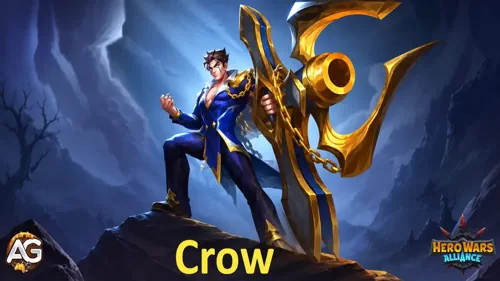

Índice de Crow
- ¿Quién es Crow?
- Cómo funciona el Silencio
- Valoración general de Crow
- Pros y contras de Crow
- Estadísticas máximas del Talismán
- Guía del Talismán
- Prioridad de mejora de habilidades de reliquia legendaria
- Mejor skin para Crow
- Prioridad de evolución de artefactos
- Prioridad de evolución de glifos
- Cómo counterear a Crow
- Sinergia de Crow
- Mejores equipos para Crow
- Conclusión
¿Quién es Crow en Hero Wars Alliance?
Crow es un héroe de Control del Camino del Honor ubicado en la línea media. Su trabajo no es ser un simple causante de daño; su trabajo es romper el ritmo enemigo con Silencio y luego hacer que cada Silencio repetido duela.

- Clase principal: Control
- Rol: Control
- Posición: Línea media
- Stat principal: Agilidad
- Facción: Camino del Honor
- Bonus de Reino: Ataque/defensa de lanceros +120%
- Cómo obtener Piedras de Alma: Los datos actuales no indican una fuente permanente de Piedras de Alma.
- Sinergia: Polaris, Phobos, Byrna, Aidan, Isaac, Judge, Julius, Iris, Tempus, Electra, Miu, Folio, Cascade, Satori, Kayla
- Tier list de Hydra: No valorado en los datos actuales.
Crow es especialmente peligroso contra héroes de Inteligencia. Silent Judgment y Holy Grenade presionan objetivos de estilo mago, mientras que Witch Hunt sigue revisando al enemigo con la Inteligencia más alta cada 12 segundos.
Lo aterrador no es solo el primer Silencio. Lo aterrador es lo que pasa después. Swift Retribution añade golpes extra contra enemigos silenciados, Final Verdict castiga las reaplicaciones, y Confinement puede impedir que los enemigos apliquen Debuffs o Maldiciones mientras al menos un enemigo esté silenciado.
Cómo funciona el Silencio en Hero Wars Alliance
El efecto de Silencio parece una máscara con la boca tachada. Para Crow, este detalle importa mucho porque sus mejores batallas se construyen alrededor de mantener a los enemigos silenciados el tiempo suficiente para que sus habilidades de seguimiento los castiguen.
Un héroe silenciado solo puede causar daño físico y usar habilidades que escalen con Ataque físico. Eso significa que no puede lanzar habilidades que no causen daño, causen daño mágico, causen daño puro o escalen con Ataque mágico.
Por ejemplo, la habilidad definitiva de Cornelius causa daño físico, pero escala con Ataque mágico. Como la habilidad depende de Ataque mágico, Cornelius no puede usarla mientras está silenciado. Por eso Crow es tan peligroso contra equipos de magos: no solo detiene el daño mágico, también puede interrumpir habilidades que parecen físicas cuando su fórmula depende de Ataque mágico.
Crow Pros y contras - Hero Wars Alliance
Pros
- Excelente presión anti-mago porque varias habilidades apuntan a héroes de Inteligencia o los castigan.
- La cadena de Silencio puede volverse opresiva después de las mejoras de Reliquia legendaria.
- Todas las fórmulas de daño escalan con Ataque físico, lo que hace que su build ofensiva sea fácil de entender.
- Confinement puede bloquear Debuffs y Maldiciones mientras Crow mantiene al menos a un enemigo silenciado.
- No necesita ayudantes de Silencio fuera del meta para funcionar, porque su propio kit ya crea una fuerte disponibilidad de Silencio.
Contras
- Necesita inversión en Reliquia legendaria para alcanzar su paquete de control más fuerte.
- La mayor parte de su valor depende de mantener Silencio activo en el momento correcto.
- La Armadura lo protege, pero un burst fuerte aún puede castigar su posición en la línea media.
- Los equipos con limpieza, escudos o presión física rápida pueden reducir su ventana de control.
Crow - Estadísticas máximas del Talismán
| Stat | |
|---|---|
 Agilidad Agilidad |
16,288 |
 Inteligencia Inteligencia |
2,598 |
 Fuerza Fuerza |
2,610 |
 Salud Salud |
754,940 |
 Ataque físico Ataque físico |
109,513 |
 Ataque mágico Ataque mágico |
7,852 |
 Armadura Armadura |
32,003 |
 Defensa mágica Defensa mágica |
18,365 |
 Penetración de armadura Penetración de armadura |
24,448 |
 Tenacidad Tenacidad |
1,564 |
Guía del Talismán de Crow Hero Wars Alliance
Crow actualmente tiene un talismán listado: Talismán de Retribución. Eso hace que la elección sea simple, pero sigue siendo importante entender por qué encaja con él. Los skins conservan sus bonus después de subirlos, pero un talismán solo da el bonus del talismán equipado en batalla.
1 - Talismán de Retribución
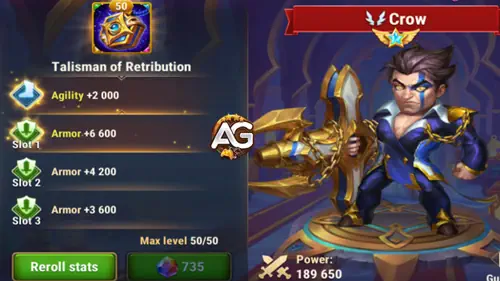
Slot de stat principal: Agilidad +2,000. Como Agilidad es la stat principal de Crow, esto da Ataque físico +6,000 y Armadura +2,000.
Slots de reroll: Armadura +6,600 en cada slot, para una bonificación combinada de reroll de Armadura +19,800.
| Talisman | Stat principal | Bonificación total de reroll | Resumen del bonus total |
|---|---|---|---|
|
Talismán de Retribución |
Agilidad +2,000 |
Armadura +19,800 |
Ataque físico +6,000 | Armadura +21,800 |
Contrasejos de Alexandre: El Talismán de Retribución es excelente porque Crow necesita ambas partes. Ataque físico aumenta sus fórmulas de daño, y Armadura lo ayuda a mantenerse con vida el tiempo suficiente para mantener Silencio activo.
Crow Prioridad de mejora de habilidades de reliquia legendaria - Hero Wars Alliance
Las mejoras de reliquia de Crow convierten Silencio en un plan de batalla: bloquear magos, propagar control, castigar repeticiones y bloquear Debuffs mientras Silencio está activo.
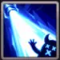
1º - Silent Judgment (Habilidad base)
Descripción en el juego: Crow ataca a los enemigos del frente, aplicando Silencio durante 8.0 segundos a todos los enemigos cuya stat principal es Inteligencia.
Explicación de la habilidad: Esta es la principal herramienta de control de Crow antes de las mejoras de reliquia. Ataca a los enemigos del frente y castiga a los enemigos cuya stat principal es Inteligencia con un Silencio de 8 segundos, lo cual ya basta para interrumpir muchos equipos cargados de magos.
Fórmula con Talismán 1: Talismán de Retribución
- Fórmula 1: Daño físico: 228,026 (200% Ataque físico + 9,000 = 109,513 x 2 + 9,000)
Información de animación de la habilidad
- Duración del Silencio: 8 segundos
- Selección de objetivo: Enemigos del frente; aplica Silencio a todos los enemigos cuya stat principal es Inteligencia.
- Palabras clave: Control, Silencio, Anti-mago
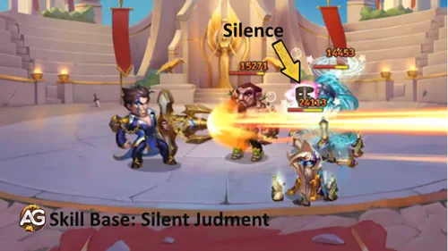
Prioridad de evolución: Muy alta - Súbelo temprano porque todo el ciclo de control de Crow empieza aquí. Un Silencio más fiable significa más valor de sus efectos de castigo posteriores.
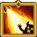
1º legendaria - Silent Judgment (Mejora de reliquia: nivel 10)
Descripción en el juego: Silent Judgment ahora aplica Silencio a todos los enemigos durante 8.0 segundos.
Explicación de la habilidad: Esta mejora de reliquia cambia la escala de la definitiva de Crow. En lugar de castigar principalmente a enemigos cuya stat principal es Inteligencia, Silent Judgment se convierte en una herramienta de Silencio para todo el equipo enemigo, dando mucho más espacio para que Final Verdict, Swift Retribution, Witch Hunt y Confinement funcionen.
Fórmula con Talismán 1: Talismán de Retribución
- Fórmula 1: Mejora legendaria: Silencio se aplica a todos los enemigos durante 8 segundos
Información de animación de la habilidad
- Duración del Silencio: 8 segundos
- Selección de objetivo: Todos los enemigos
- Palabras clave: Control, Silencio
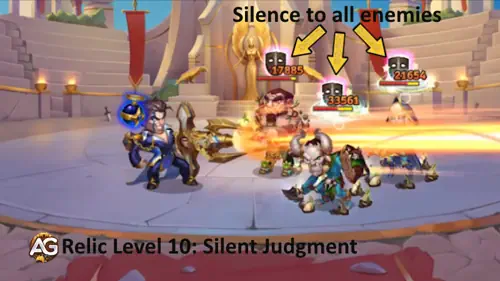
Prioridad de evolución: Muy alta - Esta es una de las mejoras de reliquia más importantes de Crow porque convierte su habilidad principal de control en un efecto de Silencio contra todos los enemigos.
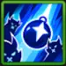
2º - Holy Grenade (Habilidad base)
Descripción en el juego: Lanza una granada al enemigo con la Inteligencia más alta, aplicando Silencio durante 5.0 segundos. El objetivo y los enemigos cercanos reciben daño físico de área.
Explicación de la habilidad: Holy Grenade es el castigo dirigido de Crow contra magos. Busca al enemigo con la Inteligencia más alta, aplica Silencio y causa daño físico de área al objetivo y a los enemigos cercanos.
Fórmula con Talismán 1: Talismán de Retribución
- Fórmula 1: Daño físico de área: 118,513 (100% Ataque físico + 9,000 = 109,513 + 9,000)
Información de animación de la habilidad
- Selección de objetivo: Enemigo con la Inteligencia más alta.
- Duración del Silencio: 5 segundos
- Palabras clave: Control, Silencio, Anti-mago, Daño de área
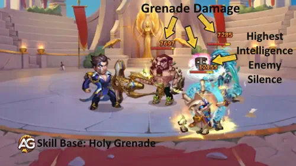
Prioridad de evolución: Muy alta - Esta habilidad es esencial porque apunta al tipo de enemigo que Crow más quiere anular: amenazas de alta Inteligencia.
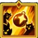
2º legendaria - Holy Grenade (Mejora de reliquia: nivel 20)
Descripción en el juego: Los fragmentos de granada causan daño físico a todos los enemigos silenciados y a los enemigos alrededor de ellos. La duración de Silencio aumenta 2.0 segundos para todos los objetivos afectados.
Explicación de la habilidad: Esta mejora de reliquia recompensa a Crow por mantener Silencio activo. Una vez que los enemigos ya están silenciados, Holy Grenade añade daño de fragmentos alrededor de ellos y extiende la ventana de Silencio, lo que ayuda a que la cadena de control de Crow continúe.
Fórmula con Talismán 1: Talismán de Retribución
- Fórmula 1: Daño físico de fragmentos de granada: 91,134.75 (75% Ataque físico + 9,000 = 109,513 x 0.75 + 9,000)
- Fórmula 2: Bonus de duración del Silencio: +2 segundos
Información de animación de la habilidad
- Selección de objetivo: Todos los enemigos silenciados y los enemigos alrededor de ellos.
- Bonus de duración del Silencio: +2 segundos para todos los objetivos afectados
- Palabras clave: Control, Silencio, Daño de área
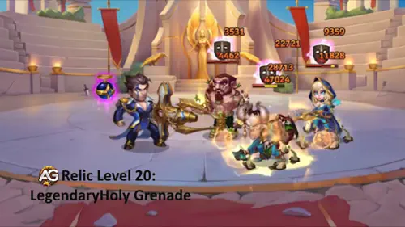
Prioridad de evolución: Muy alta - El daño extra de fragmentos y la duración de Silencio más larga son exactamente lo que Crow quiere en peleas prolongadas.
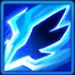
3º - Swift Retribution
Descripción en el juego: Durante 12.0 segundos, las habilidades de Crow se recargan 30% más rápido, y sus ataques básicos causan un golpe adicional a todos los enemigos afectados por Silencio.
Explicación de la habilidad: Esta habilidad convierte Silencio en tempo. La recarga más rápida ayuda a Crow a volver al control, y el golpe extra hace que cada objetivo silenciado sea más costoso de ignorar para el equipo enemigo.
Fórmula con Talismán 1: Talismán de Retribución
- Fórmula 1: Golpe físico adicional: 121,513 (100% Ataque físico + 12,000 = 109,513 + 12,000)
- Aumento de velocidad de recarga: 30%
Información de animación de la habilidad
- Duración: 12 segundos
- Palabras clave: Buff, Castigo de Silencio, Reducción de enfriamiento
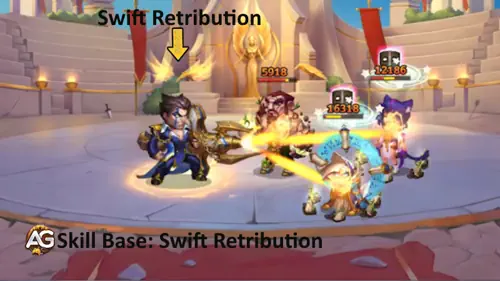
Prioridad de evolución: Media alta - Es fuerte, pero depende de que Silencio esté activo. Súbelo después de las herramientas principales de Silencio para que este daño extra tenga objetivos que golpear.
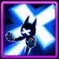
4º - Final Verdict
Descripción en el juego: Cuando Crow reaplica Silencio a un enemigo que ya tiene el mismo efecto activo, el enemigo recibe daño físico. La duración del efecto aumenta según la duración del Silencio más largo que ya afecta al enemigo.
Explicación de la habilidad: Final Verdict es la razón por la que el Silencio repetido se vuelve tan aterrador. Crow no solo refresca el control; también convierte la superposición en daño y en una duración de Silencio más larga.
Fórmula con Talismán 1: Talismán de Retribución
- Fórmula 1: Daño físico: 185,269.5 (150% Ataque físico + 21,000 = 109,513 x 1.5 + 21,000)
Información de animación de la habilidad
- Activador: Crow aplica Silencio a un enemigo que ya tiene Silencio activo.
- Palabras clave: Castigo de Silencio, Extensión de duración
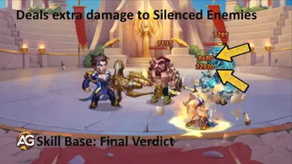
Prioridad de evolución: Alta - Esta pasiva da a Crow su mejor castigo para peleas largas. Es más fuerte cuando Silent Judgment, Holy Grenade y Witch Hunt ya están alimentando ventanas repetidas de Silencio.
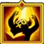
5º - Witch Hunt (Nueva habilidad, reliquia legendaria: nivel 1)
Descripción en el juego: Cada 12.0 segundos, Crow ataca al enemigo con la Inteligencia más alta. Si el objetivo está silenciado, Crow propaga el efecto a todos los enemigos cercanos durante la duración restante. Si no, aplica Silencio durante 5.0 segundos.
Explicación de la habilidad: Witch Hunt encaja perfectamente con Crow porque sigue cazando al enemigo que normalmente más importa contra él: el objetivo con la Inteligencia más alta. Si Silencio ya está ahí, se propaga. Si no, Crow lo aplica y comienza el ciclo otra vez.
Fórmula con Talismán 1: Talismán de Retribución
- Fórmula 1: Daño físico: 164,269.5 (150% Ataque físico = 109,513 x 1.5)
Información de animación de la habilidad
- Enfriamiento: 12 segundos
- Selección de objetivo: Enemigo con la Inteligencia más alta
- Duración del Silencio: 5 segundos si el objetivo aún no está silenciado
- Palabras clave: Control, Silencio, Anti-mago
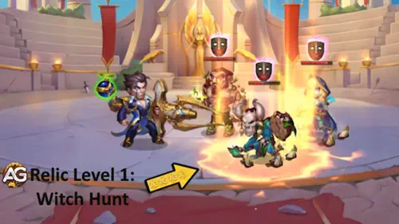
Prioridad de evolución: Muy alta - Esta nueva habilidad da a Crow presión anti-mago constante. Desbloquearla temprano hace que su ciclo de Silencio sea más fiable incluso antes de que la batalla se vuelva caótica.
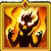
6º - Confinement (Nueva habilidad, reliquia legendaria: nivel 30)
Descripción en el juego: Mientras al menos un enemigo esté silenciado, los enemigos no pueden aplicar Debuffs ni Maldiciones. La habilidad permanece activa mientras Crow esté vivo.
Explicación de la habilidad: Confinement transforma a Crow de especialista en Silencio a protector del equipo contra presión de Debuffs y Maldiciones. La condición es simple: mantén al menos a un enemigo silenciado y mantén a Crow con vida.
Información de animación de la habilidad
- Condición activa: Al menos un enemigo está silenciado.
- Efectos impedidos: Debuffs, Maldiciones
- Activo mientras: Crow está vivo
- Palabras clave: Silencio, Bloqueo de Debuff, Bloqueo de Maldición
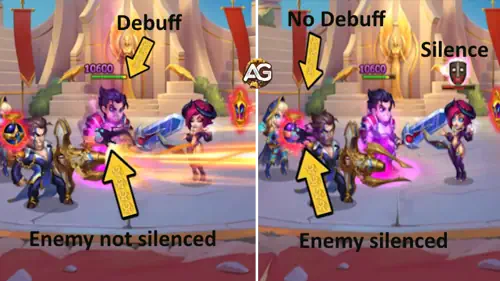
Prioridad de evolución: Muy alta - Llega tarde, pero es extremadamente valioso. En enfrentamientos con muchos Debuffs o Maldiciones, Confinement puede hacer que Crow se sienta como un héroe de control y una respuesta defensiva al mismo tiempo.
Bonus de Reino de Crow - Hero Wars Alliance
El bonus de Reino de Crow está ligado a los lanceros y otorga Ataque/defensa de lanceros +120%. Esto no cambia las fórmulas de sus habilidades de héroe, pero importa para la progresión del Reino y el valor de las tropas.
Mejor skin para Crow Hero Wars Alliance
Crow quiere daño primero y suficiente supervivencia para mantener Silencio activo. Mantén el orden visual de los skins, pero prioriza las stats que hacen más duro su castigo de control.
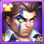
Skin predeterminada
Stats: Agilidad +1,365. Como Agilidad es la stat principal de Crow, esto da Ataque físico +4,095 y Armadura +1,365.
Prioridad de evolución: Alta (2º en general) - Agilidad es eficiente para Crow porque mejora tanto sus fórmulas de daño físico como su Armadura.
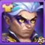
Skin Crepúsculo
Stats: Salud +106,645.
Prioridad de evolución: Media alta (3º en general) - Crow necesita vivir lo suficiente para repetir Silencio. Salud es valiosa, pero viene después de sus herramientas de daño y penetración.
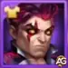
Skin Justicia Carmesí
Stats: Penetración de armadura +10,659.
Prioridad de evolución: Muy alta (1º en general) - Crow causa daño físico, así que Penetración de armadura ayuda a que la presión de Silent Judgment, Holy Grenade, Swift Retribution, Final Verdict y Witch Hunt importe más.
Crow Prioridad de evolución de artefactos Hero Wars Alliance
Los artefactos de Crow apoyan su daño físico, la presión de equipo y su supervivencia. Mantén el orden visual de artefactos, pero invierte primero donde el impacto en batalla sea más fuerte.
1º artefacto: Holy Grenade
Efecto: Ataque físico +21,357 para todo el equipo durante 9 segundos cuando Crow usa Silent Judgment. Probabilidad de activación: 100%.
Prioridad de evolución: Muy alta - La definitiva de Crow inicia su plan de Silencio, y este artefacto recompensa inmediatamente al equipo con Ataque físico. También encaja con las propias fórmulas físicas de Crow.
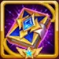
2º artefacto: Laws Codex
Efecto: Penetración de armadura +10,680 y Salud +53,394.
Prioridad de evolución: Muy alta - Esto es casi perfecto para Crow: Penetración de armadura mejora su daño físico, mientras que Salud lo ayuda a sobrevivir lo suficiente para mantener Silencio activo.

3º artefacto: Anillo de Agilidad
Efecto: Agilidad +3,990. Como Agilidad es la stat principal de Crow, esto da Ataque físico +11,970 y Armadura +3,990.
Prioridad de evolución: Alta - Excelente escalado a largo plazo, pero el Arma y el Libro normalmente cambian las peleas más rápido porque aumentan la presión del equipo y la penetración.
Crow Prioridad de evolución de glifos
Mantén el orden de glifos de Crow del juego, pero gasta recursos primero en las stats que hacen más fuerte su castigo de Silencio y lo mantienen vivo en la línea media.
1º glifo - Ataque físico
Stats de nivel 80: Ataque físico +8,340.
Prioridad de evolución: Muy alta (1º en general) - Cada fórmula de daño listada en el kit de Crow escala con Ataque físico.
2º glifo - Defensa mágica
Stats de nivel 80: Defensa mágica +12,850.
Prioridad de evolución: Media (5º en general) - Útil contra presión mágica, pero la mejor respuesta de Crow contra magos suele ser Silencio antes que Defensa mágica pura.
3º glifo - Salud
Stats de nivel 80: Salud +122,800.
Prioridad de evolución: Media alta (3º en general) - Salud mantiene a Crow vivo frente al burst y le da más tiempo para repetir Silencio.
4º glifo - Penetración de armadura
Stats de nivel 80: Penetración de armadura +12,850.
Prioridad de evolución: Muy alta (2º en general) - El daño de Crow es físico, así que la penetración ayuda a que sus fórmulas realmente atraviesen equipos defensivos.
5º glifo - Agilidad
Stats de nivel 80: Agilidad +2,110. Como Agilidad es la stat principal de Crow, esto da Ataque físico +6,330 y Armadura +2,110.
Prioridad de evolución: Alta (4º en general) - Agilidad es eficiente, pero Ataque físico directo y Penetración de armadura suelen dar valor de daño más inmediato.
Cómo counterear a Crow Hero Wars Alliance

Celeste puede ayudar a los equipos a recuperarse de la presión de control y castigar peleas más lentas. Contra Crow, el objetivo es reducir el valor de sus ventanas de Silencio antes de que Final Verdict y Confinement tomen el control.

Nebula puede limpiar todo tipo de efectos negativos, eliminando Silencio de dos aliados cercanos.

Los escudos de Julius ayudan a absorber el daño físico de Crow mientras su equipo intenta sobrevivir a la primera ola de Silencio. Los equipos con escudos a veces pueden ganar suficiente tiempo para responder al control de Crow.

Yasmine puede presionar rápidamente objetivos vulnerables. Contra Crow, su valor está en la velocidad: forzar daño antes de que Crow acumule largas ventanas de Silencio y bloquee Debuffs o Maldiciones con Confinement.
Sinergia de Crow en Hero Wars Alliance

Cascade puede añadir Silencio contra enemigos basados en Inteligencia y reducir defensas en ciertos matchups. Eso facilita que Crow active Swift Retribution, Final Verdict, Witch Hunt y Confinement.

Fafnir prioriza aliados cuya stat principal es Agilidad con Runic Shield y puede aumentar el daño de ataque físico. Crow aprecia tanto la protección como la presión extra sobre sus fórmulas físicas.

Keira puede añadir más disponibilidad de Silencio, lo que da a Crow más objetivos para Final Verdict y Swift Retribution. Esto es opcional más que obligatorio, porque Crow ya tiene una fuerte presión de Silencio por sí mismo.

Phobos encaja bien con la identidad anti-mago de Crow. Juntos hacen que los enemigos de alta Inteligencia se sientan atrapados entre Silencio, control y presión enfocada.

Polaris añade más valor de control a equipos que ya quieren ralentizar la pelea. Crow aporta Silencio, mientras Polaris ayuda al equipo a impedir que los enemigos jueguen limpiamente.

Thea puede aplicar Silencio con Vow of Silence, dando a Crow otra forma de mantener activos sus efectos de castigo de Silencio. Es más una sinergia opcional que un requisito central del meta.
Mejores equipos para Crow en 2026 - Hero Wars Alliance
Estos equipos usan a Crow como motor de Silencio. La idea principal es simple: mantener a los enemigos controlados mientras los aliados añaden escudos, presión, sustain o daño anti-mago extra.
Equipo 1 - Control anti-mago
Phobos, Iris, Tempus y Electra dan a Crow una estructura desagradable de control y presión. Este equipo está diseñado para hacer que los enemigos de alta Inteligencia pierdan turnos mientras Crow mantiene Silencio activo.
| Mejor equipo de Crow #1 | ||||
|---|---|---|---|---|
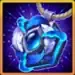 Talismán 2 |
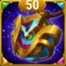 Talismán 2 |
|||
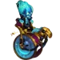 Tempus |
||||
Equipo 2 - Núcleo de control Progress
Polaris, Isaac, Judge y Julius dan más estabilidad a Crow. Los escudos y el control ayudan a Crow a sobrevivir lo suficiente para repetir Silencio y castigar magos.
| Mejor equipo de Crow #2 | ||||
|---|---|---|---|---|
Equipo 3 - Sustain y presión
Aidan, Byrna y Kayla crean un núcleo duradero mientras Polaris y Crow mantienen a los enemigos interrumpidos. Es un buen estilo cuando quieres que Crow funcione dentro de una pelea más larga.
| Mejor equipo de Crow #3 | ||||
|---|---|---|---|---|
Equipo 4 - Control con presión mágica
Miu, Phobos, Folio e Iris aportan fuerte presión mágica mientras Crow impide que los magos enemigos jueguen libremente. Este equipo se inclina hacia el control y el daño por capas.
| Mejor equipo de Crow #4 | ||||
|---|---|---|---|---|
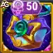 Talismán 2 |
Talismán 2 | 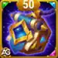 Talismán 2 |
||
| Miu | 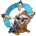 Folio |
|||
Equipo 5 - Control de Misterio
Phobos, Amira, Byrna y Satori dan a Crow un equipo más lento, pero muy disruptivo. El Silencio de Crow ayuda a la alineación a llegar al punto en que el control por capas se vuelve difícil de evitar.
Conclusión de la guía de Crow
Crow es más fuerte cuando dejas de verlo solo como un héroe anti-mago y empiezas a verlo como un motor de Silencio. Silent Judgment inicia el control, Holy Grenade apunta al enemigo con la Inteligencia más alta, Witch Hunt sigue revisando la misma debilidad, y Final Verdict castiga cada Silencio repetido.
Para inversión, priorizaría el Talismán de Retribución, el Skin Justicia Carmesí, los glifos de Ataque físico y Penetración de armadura, el artefacto Holy Grenade, Laws Codex y las mejoras de Reliquia legendaria para Silent Judgment, Holy Grenade, Witch Hunt y Confinement. Si Crow permanece vivo, el equipo enemigo puede pasar una cantidad sorprendente de la pelea sin poder usar las herramientas que trajo.
Sugerencia de video
¡Crow está rompiendo el meta! Guía de nivel máximo y reseña honesta.
¡Explora nuevas habilidades con nuestras guías destacadas!


¡Deja tu opinión!
¿Te gustó nuestra guía de Crow? ¿Hay algo que no entendiste o te gustaría sugerir cambios? Te invitamos a participar en la sección de comentarios de la página del Blog Alexandre Games. Siéntete libre de expresar tu opinión, aclarar tus dudas y compartir tus sugerencias.
Haz clic en el botón de abajo para comenzar: